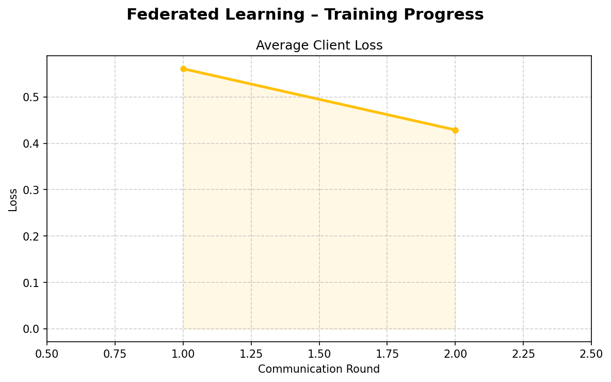
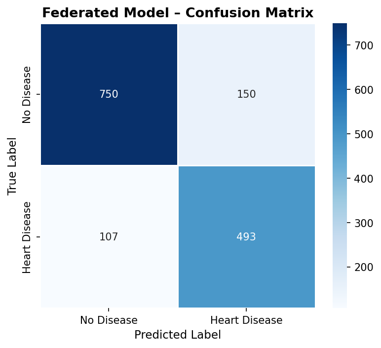
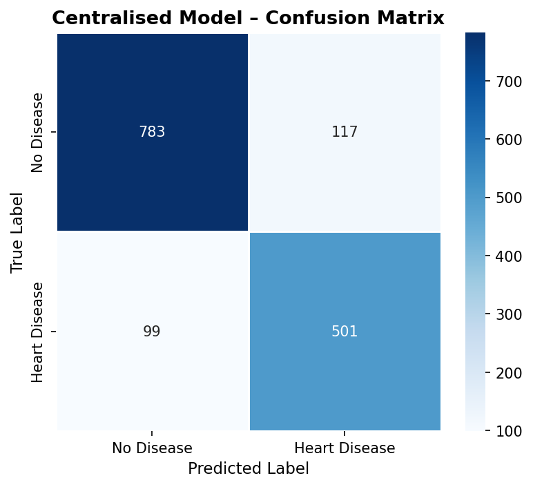
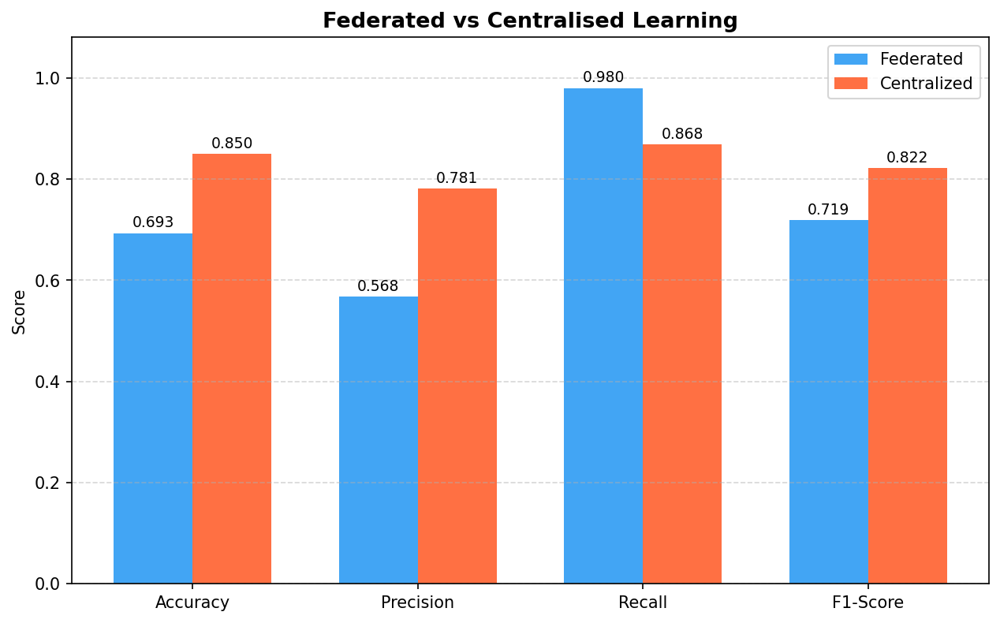
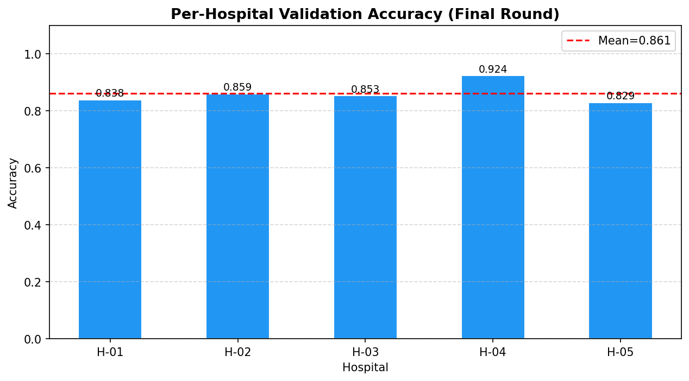
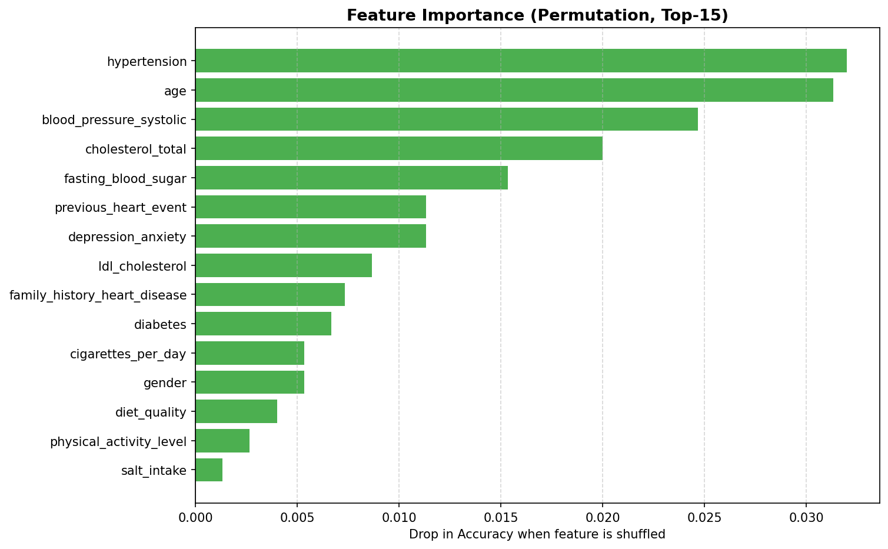
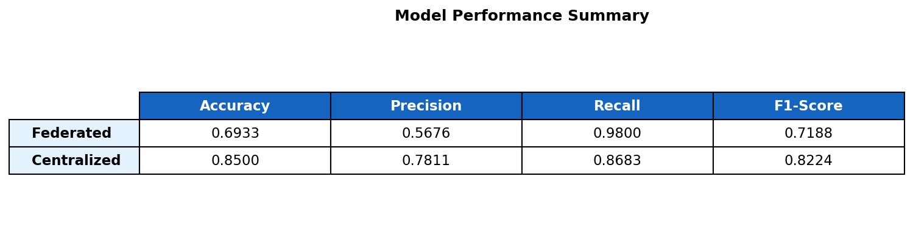

🫀 Federated Learning for Heart Disease Prediction
Final Year Engineering Project · Privacy-Preserving AI in Healthcare
⚙️ Training Configuration
Hospitals: 5 | Communication Rounds: 10 | Local Epochs: 5
Data Split: IID | Differential Privacy: Off | Device: CPU
Dataset: 10,000 patients · 29 features · Binary classification
📊 Final Model Performance
📈 Visualisations
Training Curves – Accuracy, Loss & F1 over 10 Rounds

Federated Model – Confusion Matrix

Centralised Model – Confusion Matrix

Federated vs Centralised Learning Comparison

Per-Hospital Validation Accuracy (Final Round)

Feature Importance (Permutation Method, Top-15)

Performance Summary Table

🔐 Privacy Analysis
| Privacy Property | Traditional ML | Federated Learning |
|---|
| Raw patient data shared | ✅ Yes – uploaded to central server | ❌ Never – stays at hospital |
| Data shared over network | ✅ Full dataset | Model weights only (~MBs) |
| HIPAA risk | ⚠️ High | ✅ Low |
| Single point of failure | ✅ Yes | ❌ Distributed |
| Differential Privacy support | N/A | ✅ Optional (--dp flag) |
Generated by Federated Learning Pipeline · PyTorch · FedAvg · Heart Disease Dataset